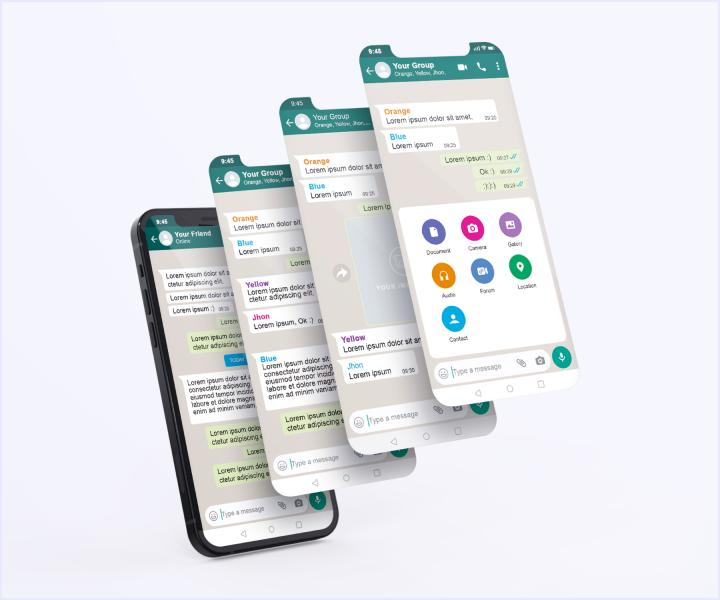

Непростий шлях психолога і супервізора, під супроводом досвідчених колег, стає легшим!
Invisible header
Ознайомся!!!
Що таке супервізія? Хто такий супервізор? І для чого потрібна така взаємодія! Одна із версій мого розуміння супервізії (їх дуже багато насправді).
Во взаємовідносинах між клієнтом і психологом нерідко зустрічаються випадки, коли психолог сумнівається, не знаходить відповіді, втрачає мотивацію або підкріплюється до емоцій клієнта.
В таких випадках страждають і клієнт і психолог, сумісна робота наче «завмирає».
Психолог, активізує всі свої знання, багато думає про клієнта і може навіть відчувати емоційне вигорання. Але задача, гарного спеціаліста, знайти в собі сили і звернутися за допомогою. До свого терапевта або супервізора. Психолог - людина, він також має питання і складнощі і він їх вирішує.
І в таких випадках без супервізії буде складно розібратися: які перепони є у клієнта, яких знань не вистачає психологу, які дії привели до «замороженого стану».
Супервізор не поглиблюється в життя клієнта і психолога, він охоплює всю історію їх взаємодії. Це підтримка психолога на всіх рівнях активної практики!
Завдяки такому відпрацюванню клієнти отримують якісну послугу, а психологи професійно зростають. Якщо вам відгукнулись слова, запрошую вас до себе на супервізію!
Хочу додати відгуки своїх супервізантів: «Ви наче сиділи поруч зі мною на консультації. Ви повністю описали процес роботи».
«Ви сказали такі слова після яких наша взаємодія з клієнтом вийшла на новий рівень і ми досягли успіхів в роботі».
Саме так, супервізор, завдяки своїм знанням і здобутому досвіду може допомагати на відстані.Наші переваги
В нашому центрі вас зустрінуть дипломовані специ
з величезним життєвим досвідом та немалим списком задоволених клієнтів.-
В нас можна опрацювати такі життєві теми:
- Особистість у ситуації кризи чи конфлікту;
- особистість, яка обирає свій професійний шлях;
- хвора людина, яка відчуває психологічні проблеми;
- підлітки з порушеннями поведінки та її батьки;
- подружжя;
- керівники, яким необхідно керувати людьми та зуміти організувати діяльність колективу;
- самі колективи, групи людей, пов'язаних професійно чи спорідненими, міжособистісними відносинами. Наші методіки
Когнітивно-поведінкова психологія
Позитивна психологія
Гєштальт-психологія
Опрацювання в групах
Як ми працюємо

- 

Наша команда

Олена Селіванова
Психолог-супервізор
-
Том Форд
Кризисний психолог, сексолог

Марк Гуерреро
Дитячий психолог
-
Даніель "Душка" Вілсон
Підніме настрій кому завгодно.
Кажуть, що залицявся до Олени Селівановой.